Soin de la peau et bien-être global
Crédits : Jia Qi Adam Bai BSc, Serena Dienes BSc, Kevin Li BSc MSPH, Sofia Maruschak-Love BHSc
Dr. Marlene Dytoc MD PhD FRCPC
Conçu par : Danting Zheng BSc Premier cycle
Traduction : Cécilia Bernier BSc, Michelle Leung BScN
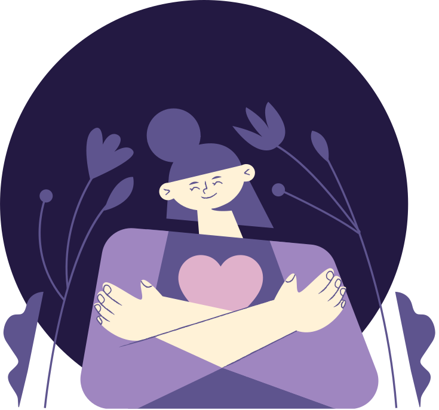
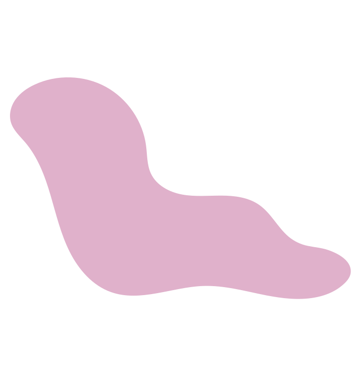
Notre plan de bien-être : ce que vous allez en retirer
À la fin de ce module, vous serez outillé pour :
Aperçu du module
- 01Prévenir les poussées 101 : garder une longueur d’avance pendant les périodes stressantes
- 02Apaiser votre système : stratégies de réduction du stress et de l’anxiété
- a) La pleine conscience en action : méditation et guides audio
- b) Techniques rapides pour soulager le stress en moins de 5 minutes
- c) Relaxation profonde : relaxation musculaire progressive (RMP)
- d) Thérapie cognitivo-comportementale (TCC)
- 03Suivre votre parcours : la puissance des journaux de santé mentale et de symptômes
- 04Nourrir votre peau et votre esprit : le rôle de la nutrition
- 05Bouger pour votre bien-être : l’exercice comme outil holistique
- 06Points clés : bâtir des habitudes de bien-être durables
Tracer votre parcours bien-être
Prévenir les poussées 101 : garder une longueur d’avance pendant les périodes stressantes
Le stress est un déclencheur majeur de l’eczéma. Pendant les périodes exigeantes (rentrée scolaire, échéances, défis personnels), votre peau peut être plus vulnérable.
- La connexion peau-esprit : les hormones du stress peuvent affaiblir votre barrière cutanée et augmenter la perception des démangeaisons.
- Ajuster vos attentes : il peut être difficile de suivre une routine de soins parfaite en période de stress. Concentrez-vous plutôt sur la constance avec les éléments essentiels.
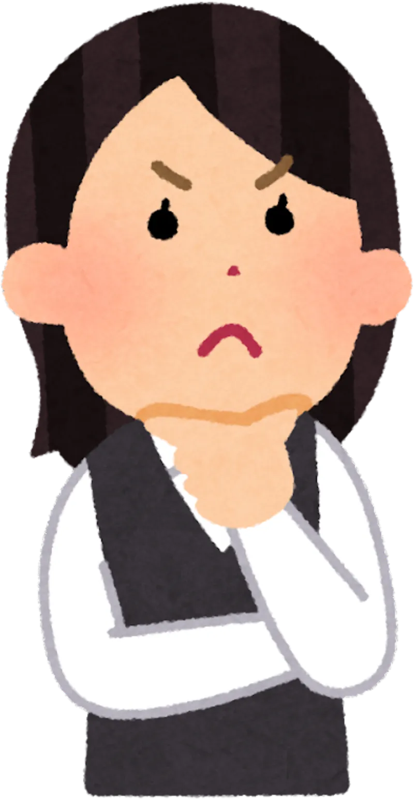
Prendre le temps d’y réfléchir
Question 1 de 5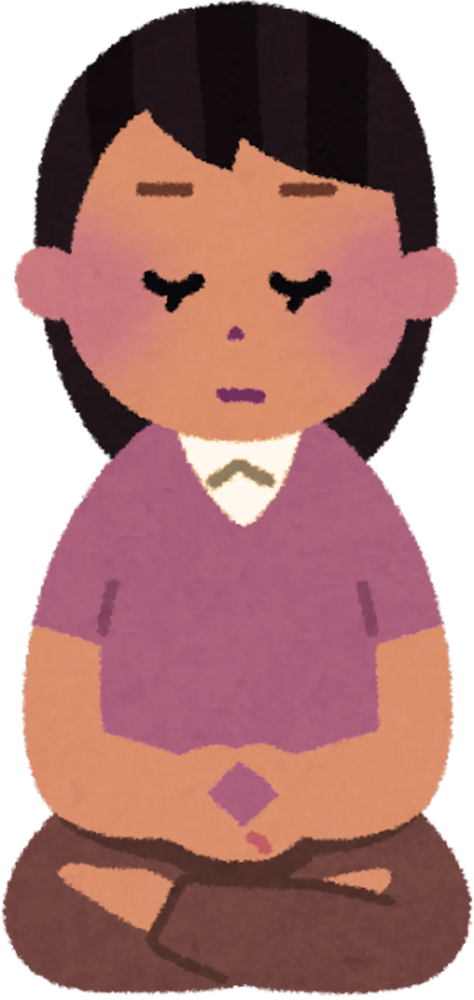
Apaiser votre système : pleine conscience et méditation
Qu’est-ce que la pleine conscience? C’est porter volontairement attention au moment présent (pensées, émotions, sensations corporelles) sans jugement. Cela aide à créer un espace entre un déclencheur (comme une démangeaison ou une pensée stressante) et votre réaction, afin de mieux composer avec la situation.
Anti-stress rapide — en moins de 5 minutes
Même de courtes pauses de détente peuvent faire une différence. À essayer partout :
Respiration en pleine conscience1 à 5 min
Comment : Concentrez-vous simplement sur votre respiration. Portez attention à l’air qui entre et sort de votre corps. Si votre esprit s’évade, ramenez-le doucement vers votre souffle.
Quand : Pendant une pause de travail ou d’étude, en attendant dans une file, avant une rencontre stressante, ou lorsque vous sentez que les démangeaisons augmentent.
Scan corporel rapide2 à 5 min
Comment : Parcourez mentalement votre corps des orteils jusqu’à la tête, en prenant note des tensions sans jugement. Essayez consciemment de les relâcher.
Quand : En transport (si vous ne conduisez pas!), pendant une pause dîner ou avant de dormir.
Ancrage sensoriel5-4-3-2-1
Comment : Nommez 5 choses que vous voyez, 4 que vous pouvez toucher, 3 que vous entendez, 2 que vous sentez et 1 que vous pouvez goûter (ou une pensée positive).
Quand : Lorsque vous vous sentez accablé ou anxieux, afin de vous ramener au moment présent.
Relaxation profonde : relaxation musculaire progressive (RMP)
Qu’est-ce que la RMP? C’est une technique où vous contractez puis relâchez, de façon systématique, différents groupes musculaires de votre corps. Elle vous aide à prendre conscience des tensions physiques et à apprendre à les relâcher. Cela peut réduire le stress global et apaiser la tension musculaire.
- 1. Trouvez une position confortable (assis ou couché).
- 2. Commencez par vos pieds : contractez les muscles pendant 5 à 10 secondes, puis relâchez complètement pendant 20 à 30 secondes, en portant attention à la différence.
- 3. Montez graduellement dans votre corps — mollets, cuisses, abdomen, poitrine, bras, mains, épaules, cou, visage — en contractant et relâchant chaque groupe musculaire.
Veuillez vous référer aux pistes audio de RMP fournies dans votre dossier de ressources.
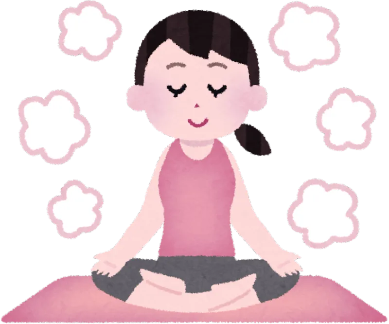
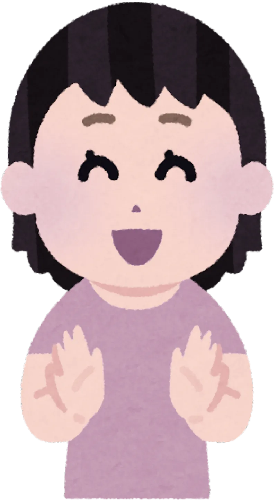
Apaiser votre système : TCC
Qu’est-ce que la thérapie cognitivo-comportementale (TCC)? C’est une psychothérapie structurée et de durée limitée qui vise à identifier et à modifier les schémas de pensées et les comportements négatifs.
- La TCC a démontré son efficacité pour réduire les symptômes de la dermatite atopique (DA), notamment l’intensité des démangeaisons et les problèmes de sommeil. Elle aide aussi à diminuer le stress, l’anxiété et la dépression associés à l’eczéma.
- La TCC offerte en ligne peut mener à des améliorations significatives. Les versions autoguidées comme celles encadrées par un clinicien se révèlent toutes deux efficaces.
Outils et ressources pratiques de TCC en Alberta
Outils TCC autonomes
- MindShift TCC — appli gratuite d’Anxiété Canada pour gérer l’inquiétude, l’anxiété et la panique (outils TCC, journal de bord, relaxation). Disponible en français sur iOS et Android. anxietycanada.com (s’ouvre dans un nouvel onglet)
- MoodGYM — modules interactifs de TCC fondés sur des données probantes. Disponible en anglais seulement. moodgym.com.au (s’ouvre dans un nouvel onglet)
Ressources en Alberta
- Retrouver son entrain (ACSM) — programme gratuit d’auto-assistance guidée fondé sur la TCC. cmha.ca/fr/bounce-back (s’ouvre dans un nouvel onglet)
- Réseau santé Alberta — ressources sur les soins de santé en français en Alberta. rsa-ab.ca (s’ouvre dans un nouvel onglet)
- TAO Tel-Aide — ligne d’écoute empathique et confidentielle en français, 24 h sur 24, 7 jours sur 7. 1-800-567-9699
- Réseaux de soins primaires (PCN) — ateliers sur la gestion du stress. En anglais, avec option de trouver un médecin en français. albertafindadoctor.ca (s’ouvre dans un nouvel onglet)
- Parlez à votre médecin de famille — il peut vous orienter vers un psychologue, un travailleur social ou un psychiatre couvert par les Services de santé de l’Alberta.
Ligne d’aide en santé mentale des Services de santé de l’Alberta (AHS)
Soutien et renseignements sur les services de santé mentale, 24 h sur 24, 7 jours sur 7, avec interprètes en français.
Prendre le temps d’y réfléchir
Question 2 de 5Nourrir votre peau et votre esprit : le rôle de la nutrition
Bien que l’alimentation ne guérisse pas l’eczéma, une bonne nutrition favorise la santé globale, ce qui peut avoir des bienfaits pour votre peau et votre bien-être!
Aliments anti-inflammatoires
Priorisez les légumes-feuilles, les petits fruits, le curcuma et les poissons riches en oméga-3.
Hydratation
L’eau aide à garder la peau bien hydratée et à éliminer les toxines.
Lien intestin-peau
Les probiotiques (p. ex. yogourt, kimchi) peuvent aider à soutenir votre système immunitaire.
Évitez les déclencheurs
Surveillez votre consommation d’aliments transformés, de produits laitiers ou de gluten si une sensibilité est soupçonnée.
Prendre le temps d’y réfléchir
Question 3 de 5Bouger pour votre bien-être : l’exercice et votre eczéma
L’activité physique régulière procure de nombreux bienfaits, même en présence d’eczéma, si elle est pratiquée avec prudence.
- Choisissez vos activités avec soin : privilégiez des activités qui font moins transpirer si la sueur est un déclencheur important (p. ex. la marche, le yoga, la natation).
- Habillez-vous pour réussir : portez des vêtements amples, respirants et qui évacuent bien l’humidité.
- Soins après l’exercice : si vous suez, prenez une douche à l’eau tiède (jamais chaude) rapidement après, épongez doucement votre peau et appliquez une crème hydratante immédiatement.
- Écoutez votre corps : si votre peau est très irritée ou douloureuse, il est tout à fait acceptable d’opter pour des mouvements plus doux ou simplement du repos.
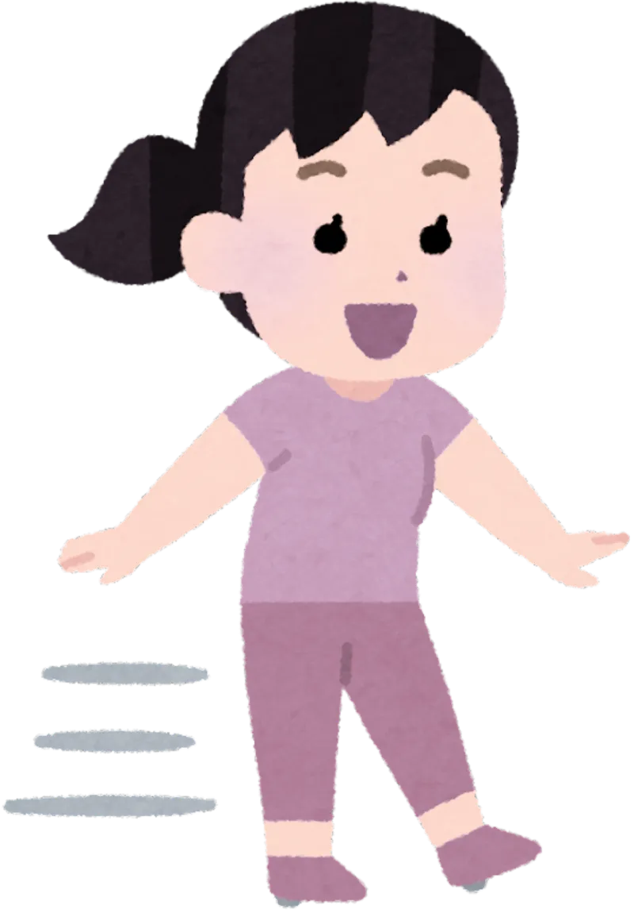
Prendre le temps d’y réfléchir
Question 4 de 5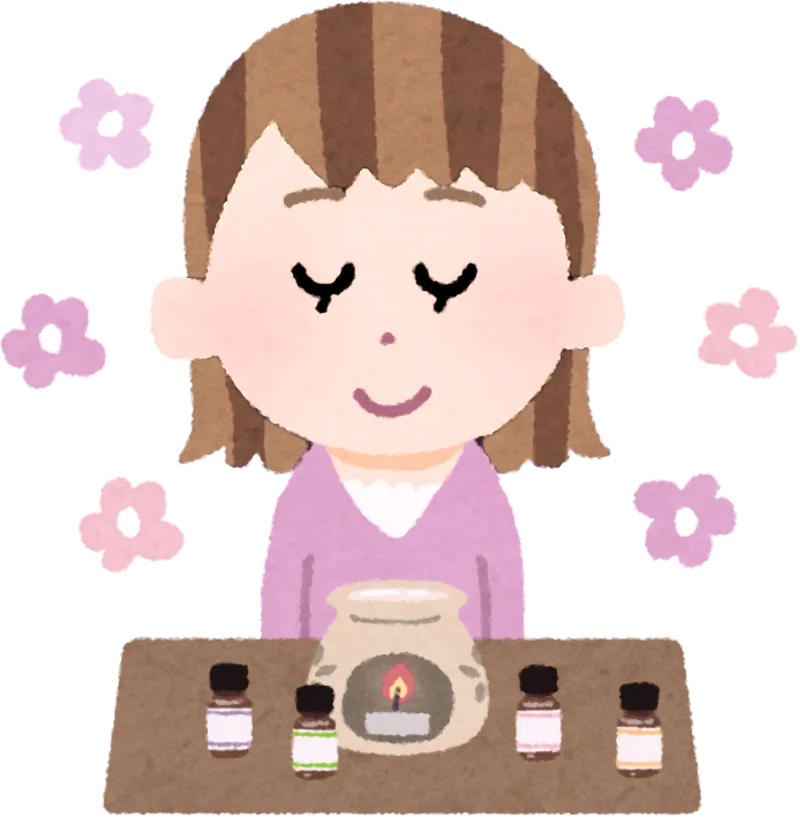
Prendre le temps d’y réfléchir
Question 5 de 5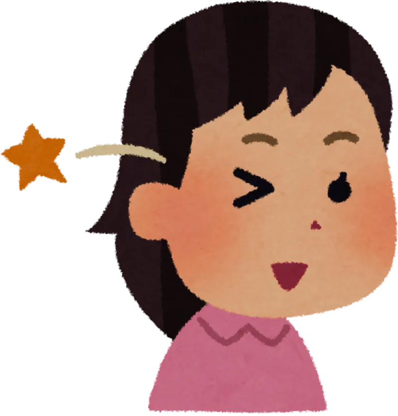
Récapitulons les points clés
- ›Gérez votre eczéma de façon proactive durant les périodes stressantes en adaptant votre routine à des soins «suffisamment bons» et constants.
- ›Intégrez de courtes pauses de respiration en pleine conscience, des scans corporels rapides et des exercices d’ancrage sensoriel, ainsi que des techniques comme la RMP ou la TCC, pour calmer votre système et réduire la réactivité aux démangeaisons.
- ›Soutenez votre peau et votre santé globale avec une alimentation équilibrée et anti-inflammatoire, et une bonne hydratation.
- ›Pratiquez régulièrement une activité physique qui respecte votre peau pour améliorer l’humeur, réduire le stress et favoriser le bien-être.
- ›Établir de petites habitudes de bien-être constantes est un outil puissant pour bien vivre avec l’eczéma.
Ce module offre de l’information générale et ne remplace pas les conseils de votre médecin ou de votre dermatologue. En cas de crise ou si vous pensez à vous faire du mal, composez le 911 ou appelez la ligne d’aide en santé mentale de l’AHS au 1-877-303-2642.
Sources
- Mitchell AE. Bidirectional relationships between psychological health and dermatological conditions in children. Psychol Res Behav Manag. 2018;11:289-298.
- Haykin H, Rolls A. The neuroimmune response during stress: a physiological perspective. Immunity. 2021;54(9):1933-1947.
- Sidbury R, et al. Guidelines of care for the management of atopic dermatitis: Section 4. J Am Acad Dermatol. 2014;71(6):1218-33.
- Bae BG, et al. Progressive muscle relaxation therapy for atopic dermatitis. Acta Derm Venereol. 2012;92(1):57-61.
- Koo J, et al. Cognitive behavior therapy as dermatological treatment. Int J Womens Dermatol. 2022;8(4):e011.
- Kern D, et al. Self-guided vs clinician-guided online CBT for atopic dermatitis. JAMA Dermatol. 2024;160(2):123-131.
- Leeuwendaal NK, et al. Fermented foods, health and the gut microbiome. Nutrients. 2022;14(7):1527.
- Oizumi R, et al. The potential of exercise on lifestyle and skin function: narrative review. JMIR Dermatol. 2024;7:e51962.